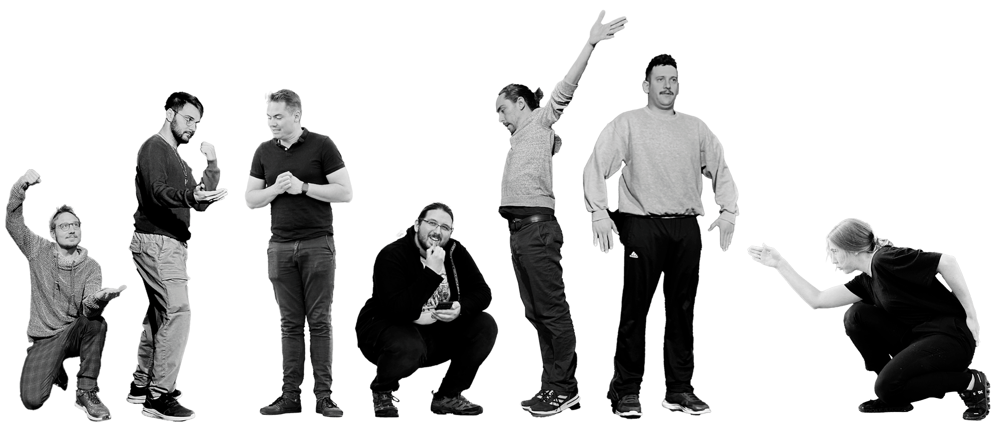

Un cours d'impro pour les 16 à 20 ans
Tu as entre 16 et 20 ans et tu as toujours voulu essayer l’impro ? Tiens, tiens, tiens, comme ça tombe bien… Nous proposons justement un cours d’initiation à l’improvisation théâtrale ! Donné par l’un·e de nos improvisateur·ice·s de talent, ce cours te permettra de découvrir la fabuleuse discipline qui est la nôtre, à travers des entrainements variés qui aborderont toutes les facettes de ce noble art (Répartie, bases d’acting, mise en scène, etc…). Et ça ne s’arrête pas l à : dans le cadre de ce cours, nous proposerons également diverses sorties culturelles (matches d’improvisation, spectacles, etc…). Des expériences enrichissantes qui te permettront d’élargir tes horizons et de cultiver ta palette de comédien·ne !
Attends, tu hésites encore ? Encore une bonne nouvelle : nous t’offrons 3 semaines d’essai, afin que tu puisses te frotter à la discipline avant de te lancer dans le cours.
Et puisque tu nous as lus jusqu’ici, voici un premier conseil : l’improvisation théâtrale, c’est avant tout OSER. Alors, oseras-tu cette découverte ? On se réjouit déjà de te rencontrer !
Infos pratiques
Pour qui ?
Les jeunes de 16 à 20 ans
Où ?
Av. des sports 5, Yverdon-les-Bains
Quand ?
Tous les mardis de 18h00 à 20h00
Combien ?
CHF 200.-/semestre (140.- carte culture)
Tes profs
Martin, Joel, Yohan, Sylvain, Tonio, Elio et Mathilde
Notre équipe de professeur·e·s est constituée d'improvisateur·ice·s talentueux·ses avec plus de 60 ans d'expérience réunis.
Inscriptions
Les inscriptions ont lieu durant les premières semaines de chaque semestre. Écris-nous un mail pour intégrer l'équipe !
Tu as une question ?
N'hésitez pas à nous envoyer un mail ou un message !
→ ici ←